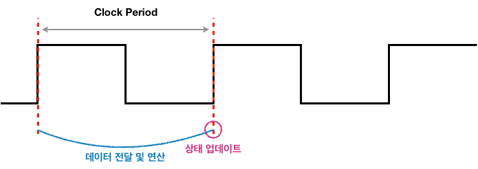

Performance
아래 내용은 성능에 영향을 미치는 요소들과 어떤 점을 결정하는 지를 보여준다.
Algorithm, Data Structure (+ Coding Skills)
- HLL 연산이 실행되는 횟수를 결정한다
- 다시 표현하자면, 프로그래머가 얼마나 효율적인 코드를 짜는지가 중요하다는 것이다. 이 때 효율적인 코드는 적은 연산으로 같은 결과를 내는 코드를 말한다.
Programming Language, Compiler, Architecture
- HLL 연산 당 기계 명령어 수를 결정한다.
- 프로그래밍 언어, 컴파일러, ISA 등에 따라 같은 HLL 연산이라도 다른 어셈블리어, 곧 기계 명령어로 변환될 수 있으므로 성능에도 영향을 미친다.
Processor and Memory System
- 명령어 실행 속도를 결정한다.
- 같은 명령어를 실행한다고 하더라도 각각의 명령어를 실행하는 속도가 빠르면 전체적인 프로그램 실행 속도도 향상된다.
I/O System(including OS)
- I/O(입출력) 연산 속도를 결정한다.
Defining Performance
성능을 판단하는 기준은 크게 Response Time과 Throughput 두 가지가 존재한다.
Response Time
-
= latency, execution time
-
하나의 작업(task/job)을 처리하는 데 걸리는 시간
-
빠른 프로세서
Throughput
- = bandwidth
- 한 번에 처리할 수 있는 작업량
- => (단위 시간 당 처리한 작업)
- 많은 프로세서
일단 Response Time에 집중한다!
Performance
정의
$$ Performance_{X} = \frac{1}{Execution\ time_{x}} $$
- 성능은 실행 시간의 역수로 정의한다.
- 즉, 실행 시간이 짧을 수록 프로그램 성능이 좋다고 할 수 있다.
Measuring Execution Time
실행 시간에는 Elapsed Time과 CPU Time이 있다.]
Elapsed Time
- 주어진 작업 외에 동시에 이루어지는 다른 작업(I/O, OS 작업, 대기 시간..)을 하는 시간까지 포함한 시간
- 실제 체감 시간과 가깝지만, 순수하게 프로그램 간의 성능 비교에는 적합하지 않음
CPU Time
- 주어진 작업을 처리하는 데 걸린 시간(I/O, 다른 프로그램 실행 시간 포함 X)
- User CPU Time
- 주어진 프로그램의 코드를 실행하는 데에 걸리는 시간
- 우리는 일단 여기에만 집중!
- System CPU Time
CPU Clocking

Clock Frequency(Clock Rate)
- 초당 클럭 사이클 수
- Ex - $$ 4.0GHz = 4.0 * 10^{9} Hz $$
Clock Period
- 한 클럭 사이클에 걸리는 시간
- Ex - $$ 250ps = 250 * 10^{-12}s $$
한 클럭 사이클이 진행되는 동안 연산이 수행되고, 사이클이 끝나는 시점에 상태가 갱신된다. 한 사이클 내에 수행되지 못하는 명령어는 여러 사이클에 걸쳐 수행된다.
CPU Time
$$ \begin{eqnarray} CPU\ Time = (CPU\ Clock\ Cycles)\times{(Clock\ Cycle\ Time)} \\ = \frac{CPU\ Clock\ Cycles}{Clock\ Rate} \end{eqnarray} $$
- => 클럭 사이클 수가 적거나 Clock Rate가 높을 수록 CPU Time이 낮아진다(= 성능이 향상된다).
Instruction Count, CPI, and Performance
Instruction Count
- 말 그대로 명령어의 개수
- 프로그램, ISA, 컴파일러에 의해 결정
- 같은 프로그램이라도 ISA가 다르면 명령어의 종류가 달라지므로 같은 연산이라도 다른 명령어 조합으로 수행하게 되기 때문에 Instruction Count에 영향을 줌
- 같은 ISA, 같은 프로그램이라도 컴파일러의 알고리즘에 따라 다른 어셈블리어, 기계어가 나올 수 있기 때문에 그에 따른 Instruction Count 차이 또한 발생할 수 있음
Average CPI(Clock-Cycles Per Instruction)
-
컴파일 된 프로그램의 각 명령어 클럭 수의 평균값
-
Instruction mix에 영향을 받음
CPU Performance
CPI = Clock Cycles(프로그램 전체 클럭수) / Instruction Count(명령어 수) 이므로 Clock Cycles은 다음과 같다.
$$ Clock\ Cycles = (Instruction\ Count)\times{(CPI)} $$
아래 식은 앞의 주제에서 설명한 CPU Time이다.
$$ \begin{eqnarray} CPU\ Time = (CPU\ Clock\ Cycles)\times{(Clock\ Cycle\ Time)} \\ = \frac{CPU\ Clock\ Cycles}{Clock\ Rate} \end{eqnarray} $$
여기서 Clock Cycle을 CPI와 관련된 식에 따라 변형하면 다음과 같다.
$$ \begin{eqnarray} CPU\ Time = (Instruction\ Count)\times{(CPI)}\times{(Clock\ Cycle\ Time)} \\ = \frac{ (Instruction\ Count)\times{(CPI)}}{Clock\ Rate} \end{eqnarray} $$
Header Image created by Freepik